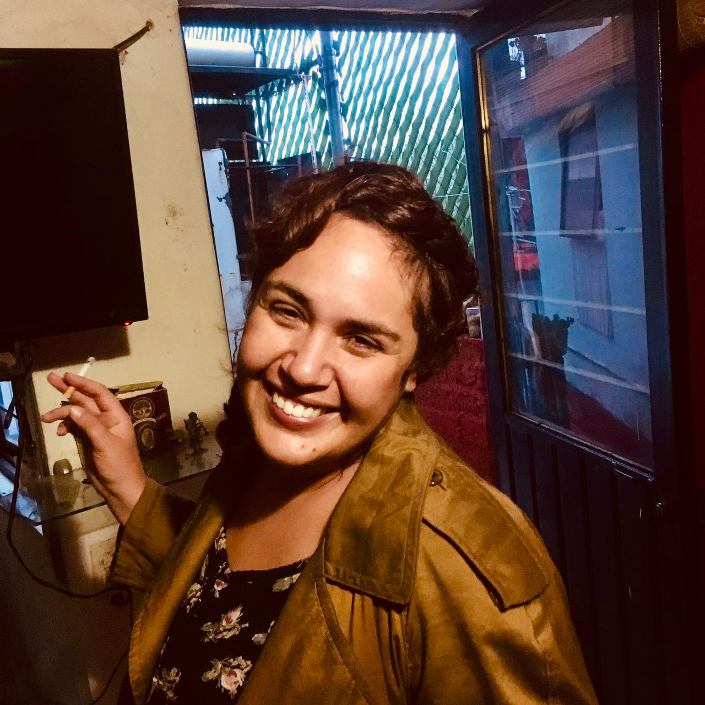

Carlos Martínez
Personaje: Papá Púa
Actor de doblaje con 15 años de experiencia. Especializado en voces graves y personajes paternales. Ha participado en más de 50 series animadas.
Contactar

María Mora
Personaje: Mamá Púa
Actriz de doblaje bilingüe (español e inglés nativo). Su versatilidad vocal y dominio perfecto de ambos idiomas la hacen ideal para proyectos internacionales.
Contactar
Daniela Baeza
Personaje: Ricky
Actriz de doblaje chilena con experiencia en voces juveniles. Su energía y versatilidad la hacen perfecta para interpretar personajes adolescentes dinámicos.
Contactar